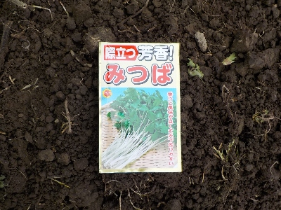

更新日 : 2026/03/14

昔は自宅の果樹の下らへんに自生していたので春によく食べてたんですが、いつのまにかなくなってしまいました。草刈りの仕方がまずかったかな。
建物の横で昼から暗い場所に種蒔きしました。そんなに沢山タネを蒔くつもりはなかったですが、1袋に沢山タネが入っていたので多めにまきました。
それでもタネが余ったので、来年も再来年も種蒔きできそうです。
順調に育てば大量に食べれそうです。
でもこの写真の三つ葉は茎が白いな。なんだこれ？日に当てずに育てたのかな？それともこんな種類なの？
沢山育てて大量に食べようかな。
【おいしいものを食べよう。】【たくさん寝よう。】
【ソロ活をしよう!】【季節感のあることをしよう。】【動画視聴はほどほどに。】【当サイトの全てのコンテンツは無断転載禁止です。】